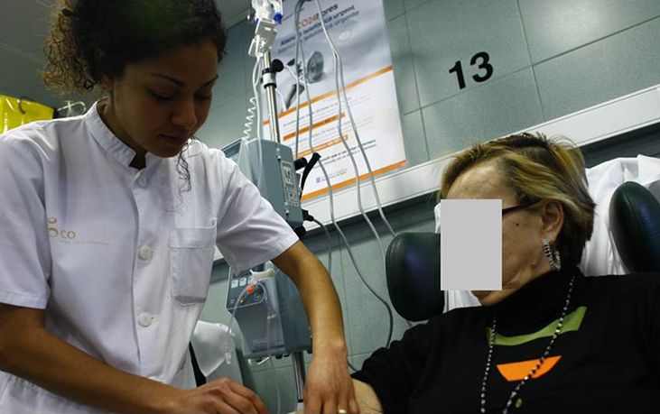

ICO 24h
MÓDULO 2 : Hospital de Día Oncológico
Objetivos :
- 1 Mejorar la continuidad asistencial del paciente onco-hematologico. Este programa revisa aspectos conceptuales básicos y terapéuticos con el objetivo de que la consulta telefónica urgente sea atendida en la misma continuidad asistencial que el proceso oncológico.
- 2 Capacitar a los profesionales que realizan atención telefónica urgente en la toma de decisiones. Se actualizan conocimientos en los principales motivos de consulta y se revisa la evidencia científica para capacitar a los profesionales en la toma de decisiones urgentes.
2.1 ¿Qué es un Hospital de Día Onco-Hematológico?
Es una unidad asistencial donde se administran tratamientos (quimioterapia, antibióticos endovenosos, hemoderivados…) o se realizan exploraciones (biopsia médula ósea, colocación de catéteres tipo PICC) sin necesidad que el paciente ingrese en el hospital.
Habitualmente, es una unidad gestionada por enfermería, sin médico presencial. Los tratamientos son programados en manera consecutiva en función de la duración de la infusión. Es importante recordar este punto, ya que si un paciente nos alerta por un problema agudo/urgente debemos intentar solucionarlo antes de que llegue a hospital de día ya sea indicándole valoración por su equipo habitual, UACOS o servicios de urgencias. Debemos de evitar recomendaciones del tipo: (Si mañana va a hospital de día coméntelo con la enfermera) ya que implican un retraso encadenado en la atención a los pacientes programados.
